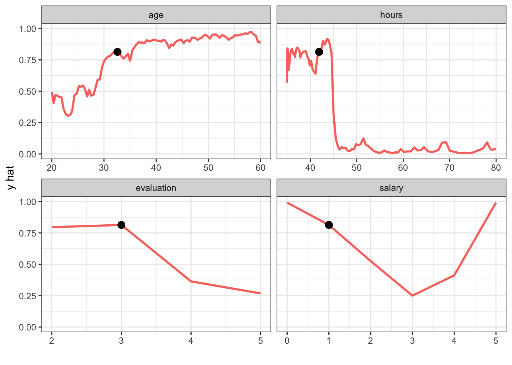
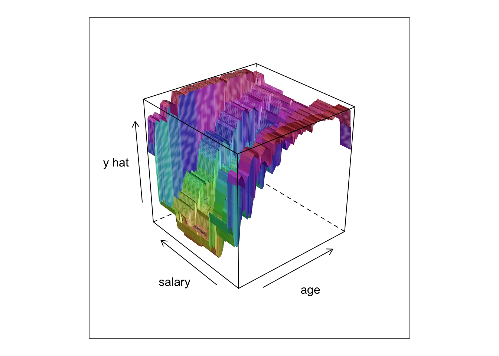
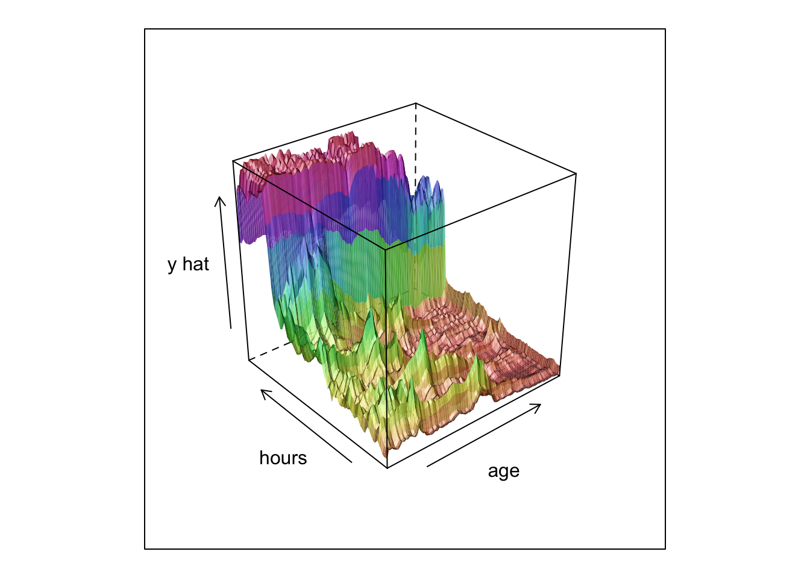
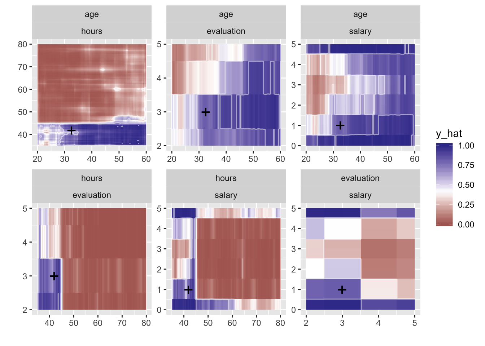
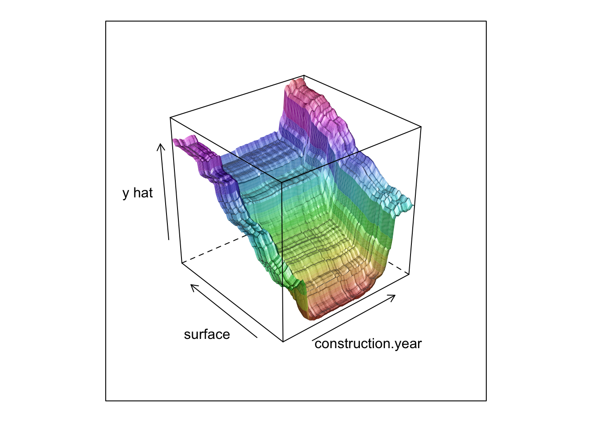
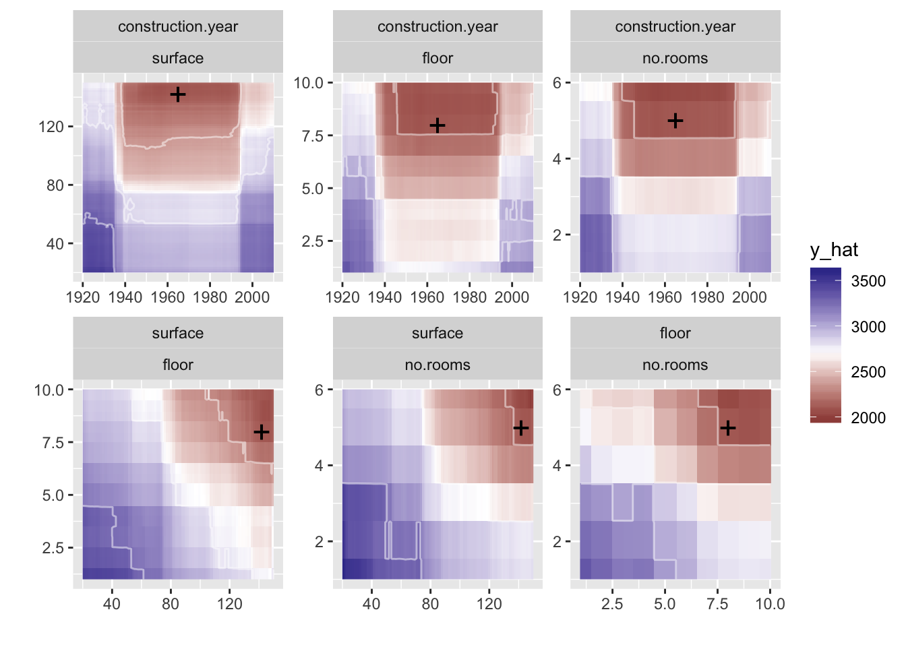

Chapter 6 Ceteris Paribus Principle
What if scenarios
6.1 Intoduction
- visualise what if scenatios easier to understand black box if we can understand how model response changes with changes in input
- identification of important vaiables
limits - correlated variables - interactions between variables
-> Individual Conditional EXpectations ICE
6.2 1D profiles
6.3 2D profiles
6.4 Code snippets
2d plots for interactions
library("DALEX")
library("ceterisParibus")
library("randomForest")
set.seed(59)
model <- randomForest(status ~ gender + age + hours + evaluation + salary, data = HR)
pred1 <- function(m, x) predict(m, x, type = "prob")[,1]
explainer_rf_fired <- explain(model, data = HR[,1:5],
y = HR$status == "fired",
predict_function = pred1, label = "fired")
new_emp <- HR[1, ]
new_emp## gender age hours evaluation salary status
## 1 male 32.58267 41.88626 3 1 fired## y_hat new_x1 new_x2 vname1 vname2 label
## 1 0.434 20.00389 35.00000 age hours fired
## 1.1 0.540 20.00389 35.44978 age hours fired
## 1.2 0.584 20.00389 35.89955 age hours fired
## 1.3 0.588 20.00389 36.34933 age hours fired
## 1.4 0.566 20.00389 36.79911 age hours fired
## 1.5 0.608 20.00389 37.24889 age hours fired## Warning: package 'dplyr' was built under R version 3.5.1##
## Attaching package: 'dplyr'## The following object is masked from 'package:lime':
##
## explain## The following object is masked from 'package:randomForest':
##
## combine## The following object is masked from 'package:DALEX':
##
## explain## The following objects are masked from 'package:stats':
##
## filter, lag## The following objects are masked from 'package:base':
##
## intersect, setdiff, setequal, unionlibrary("tidyr")
wi_rf_2d %>%
filter(vname1 == "age", vname2 == "salary") %>%
select(y_hat, new_x1, new_x2) %>%
spread(new_x2, y_hat) -> wi_mat
wi_mat <- as.matrix(wi_mat[, -1])
attr(wi_mat, "dimnames") = NULL
library("lattice")
wireframe(wi_mat, shade = TRUE, xlab="age", ylab="salary", zlab="y hat")
wi_rf_2d %>%
filter(vname1 == "age", vname2 == "hours") %>%
select(y_hat, new_x1, new_x2) %>%
spread(new_x2, y_hat) -> wi_mat
wi_mat <- as.matrix(wi_mat[, -1])
attr(wi_mat, "dimnames") = NULL
wireframe(wi_mat[101:1,101:1], shade = TRUE, xlab="age", ylab="hours", zlab="y hat")

# -------------
apartments_rf_model <- randomForest(m2.price ~ construction.year + surface + floor +
no.rooms + district, data = apartments)
explainer_rf <- explain(apartments_rf_model,
data = apartmentsTest[,2:6], y = apartmentsTest$m2.price)
new_apartment <- apartmentsTest[100, ]
new_apartment## m2.price construction.year surface floor no.rooms district
## 1100 1928 1947 142 8 5 Wolanew_apartment$construction.year = 1965
new_apartment$no.rooms = 5
wi_rf_2d <- what_if_2d(explainer_rf, observation = new_apartment)
wi_rf_2d %>%
filter(vname1 == "construction.year", vname2 == "surface") %>%
select(y_hat, new_x1, new_x2) %>%
spread(new_x2, y_hat) -> wi_mat
wi_mat <- as.matrix(wi_mat[, -1])
attr(wi_mat, "dimnames") = NULL
wireframe(wi_mat[101:1,101:1], shade = TRUE, xlab="construction.year", ylab="surface", zlab="y hat")

cp_rf_y1 <- ceteris_paribus(explainer_rf, new_apartment, y = new_apartment$m2.price, variables = c("construction.year", "floor"))
# plot(cp_rf_y1, show_profiles = TRUE, show_observations = TRUE, show_rugs = FALSE,
# alpha = 1, size_points = 3, color = "_vname_", color_points = "black")
plot(cp_rf_y1, show_profiles = TRUE, show_observations = TRUE, show_rugs = FALSE,
alpha = 1, size_points = 3, color = "_vname_", color_points = "black",
as.gg = TRUE) + theme_bw() +
theme(legend.position = "none") + scale_y_reverse(name = "y hat") + xlab("")
wi_rf_2d <- what_if_2d(explainer_rf, observation = new_apartment, grid_points = 201, selected_variables = c("construction.year", "floor"))
wi_rf_2d %>%
filter(vname1 == "construction.year", vname2 == "floor") %>%
select(y_hat, new_x1, new_x2) %>%
spread(new_x2, y_hat) -> wi_mat
wi_mat <- as.matrix(wi_mat[, -1])
attr(wi_mat, "dimnames") = NULL
wireframe(-wi_mat, shade = TRUE, xlab="construction.year", ylab="floor", zlab="y hat")
wi_mat[100,] = NA
wi_mat[,100] = NA
wireframe(-wi_mat, shade = TRUE, xlab="construction.year", ylab="floor", zlab="y hat")
wi_rf_2d %>%
filter(vname1 == "surface", vname2 == "floor") %>%
select(y_hat, new_x1, new_x2) %>%
spread(new_x2, y_hat) -> wi_mat
wi_mat <- as.matrix(wi_mat[, -1])
attr(wi_mat, "dimnames") = NULL
#wireframe(wi_mat[101:1,101:1], shade = TRUE, xlab="surface", ylab="floor", zlab="y hat")
#wireframe(wi_mat[101:1,101:1], xlab="surface", ylab="floor", zlab="y hat")
#plot(wi_rf_2d, add_raster = FALSE, bins = 5) + theme_dark()References
Biecek, Przemyslaw. 2018b. CeterisParibus: Ceteris Paribus Profiles. https://pbiecek.github.io/ceterisParibus/.